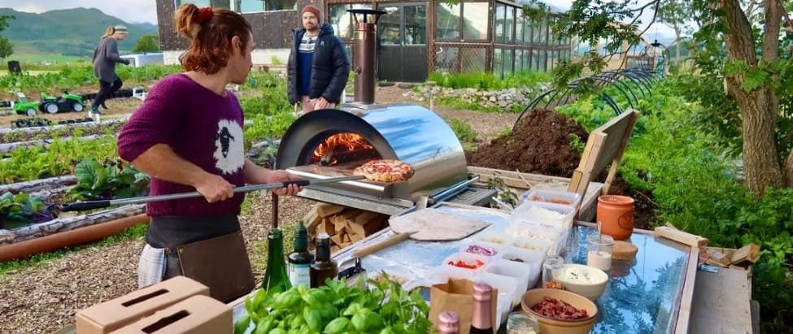

Lofoten's tradition and history extends beyond fishing and world-class
nature. Food and beverages have long been a major and important part of
Lofoten's identity. Lofoten offers a wide variety of exceptional food
experiences.
Lofoten has stunning scenery with wild mountains and sea fishing, but do it
have unique places to eat in Lofoten? Yes, it sure does! I will present five
places to eat in Lofoten that will not break the bank.